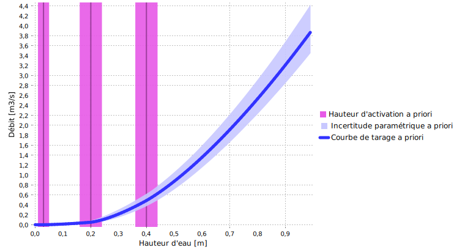
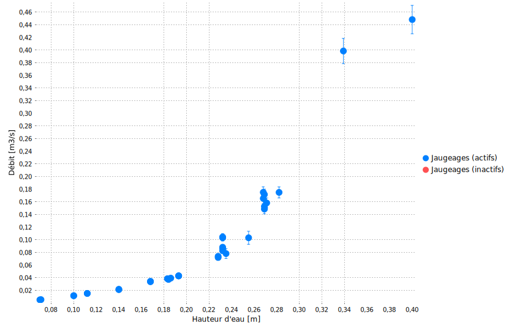
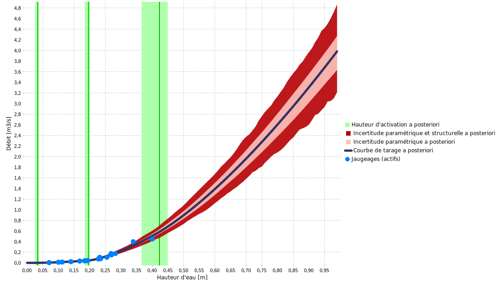

Téléchargez le fichier BaRatinAGE de ce cas d’étude : Mercier-D610.bam
1 Analyse hydraulique
Cette station fait partie de l’observatoire du bassin versant de l’Yzeron qui suit plusieurs bassins peri-urbains autour de la ville de Lyon depuis 1997. Ce cas est intéressant car la relation hauteur-débit est contrôlée par une combinaison de déversoirs artificiels dont les dimensions sont bien connues (voir Figure ci-dessous). Les a priori peuvent donc être spécifiés facilement et conduire à une courbe de tarage a priori qui est déjà relativement précise.

Figure 1. Analyse des contrôles hydrauliques pour le Mercier au pont de la D610. Gauche: photo prise depuis l’aval, droite: dimensions des déversoirs.
La Figure 1 suggère que la configuration hydraulique est une combinaison de trois contrôle de type section rectangulaire. Le premier contrôle s’active pour une hauteur de \(3\mathrm{cm}\) au-dessus du fond (qui correspond au zéro de l’échelle à cette station). Le second contrôle s’active pour une hauteur de \(20\mathrm{cm}\), et inclue les crêtes à la gauche et à la droite du premier contrôle. Le troisième contrôle s’active pour une hauteur de \(40\mathrm{cm}\). Ces trois contrôles s’ajoutent successivement les uns aux autres, conduisant à la matrice des contrôles ci-dessous.
\[ \begin{array}{|c|c|c|} \hline \text{Contrôle} & \text{Nature} & \text{Type} \\ \hline 1 & \text{Déversoir rectangulaire artificiel} & \text{section} \\ \hline 2 & \text{Déversoir rectangulaire artificiel} & \text{section} \\ \hline 3 & \text{Déversoir rectangulaire artificiel} & \text{section} \\ \hline \end{array} \]
\[ \begin{array}{|c|} \hline &\text{contrôle 1} & \text{contrôle 2} & \text{contrôle 3}\\ \hline \text{segment 1} &\color{lime}{1} & &\\ \hline \text{segment 2} & \color{lime}{1} & \color{lime}{1} &\\ \hline \text{segment 3} & \color{lime}{1} & \color{lime}{1} & \color{lime}{1} \\ \hline \end{array} \]
2 Spécification des a priori
Les dimensions données dans la Figure 1 conduisent aux a priori suivants :
- Le contrôle 1 s’active à \(\kappa = 3 \mathrm{cm} \pm 2 \mathrm{cm}\) et a pour largeur \(B_w = 40 \mathrm{cm} \pm 5 \mathrm{cm}\)
- Le contrôle 2 s’active à \(\kappa = 20 \mathrm{cm} \pm 4 \mathrm{cm}\) et a pour largeur \(B_w = 50+156=206 \mathrm{cm} \pm 20 \mathrm{cm}\)
- Le contrôle 3 s’active à \(\kappa = 40 \mathrm{cm} \pm 4 \mathrm{cm}\) et a pour largeur \(B_w = 80 \mathrm{cm} \pm 10 \mathrm{cm}\)
La courbe de tarage a priori qui en résulte est montrée ci-dessous, et comme attendu elle est déjà relativement précise.

Figure 2. Courbe de tarage a priori pour le Mercier au pont de la D610.
3 Jaugeages et courbe de tarage a posteriori
34 jaugeages peuvent être utilisés pour estimer la courbe de tarage a posteriori, et la Figure ci-dessous indique une dispersion notable. Le jaugeage le plus haut reste bien en deçà des plus forts débits observés à cette station, qui peuvent atteindre \(2-3 \mathrm{m}^3.\mathrm{s}^{−1}\) lors des fortes crues.

Figure 3. Jaugeages disponibles.
La courbe de tarage a posteriori ci-dessous suggère que les jaugeages n’ont pas permis de réduire l’incertitude de la courbe de tarage a priori. En fait, leur dispersion conduit à identifier une incertude structurelle forte (zone rouge foncé), qui conduit à une extrapolation très incertaine vers les plus forts débits.

Figure 4. Courbe de tarage a posteriori pour le Mercier au pont de la D610.